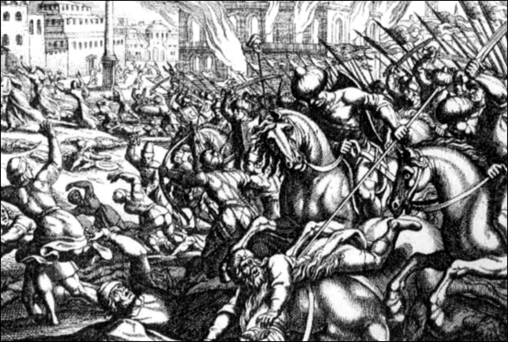
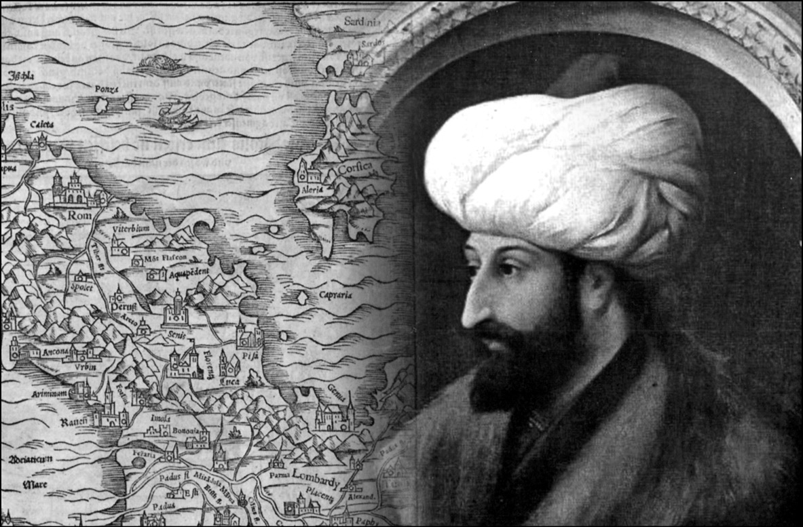
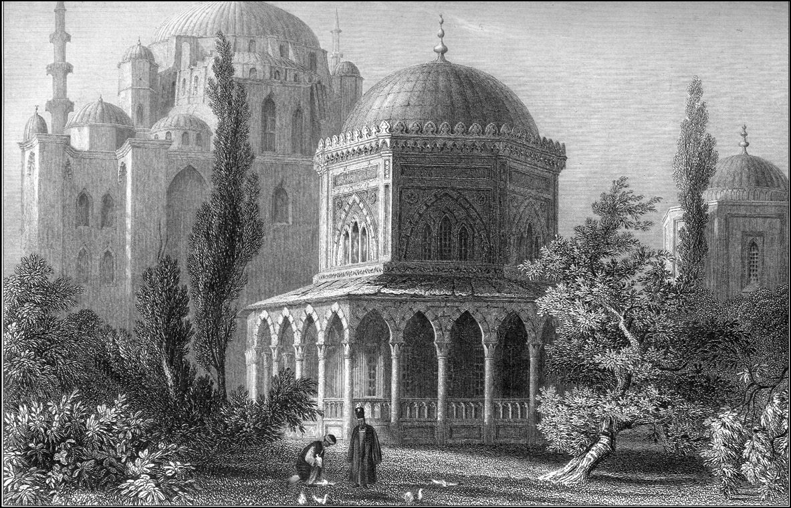
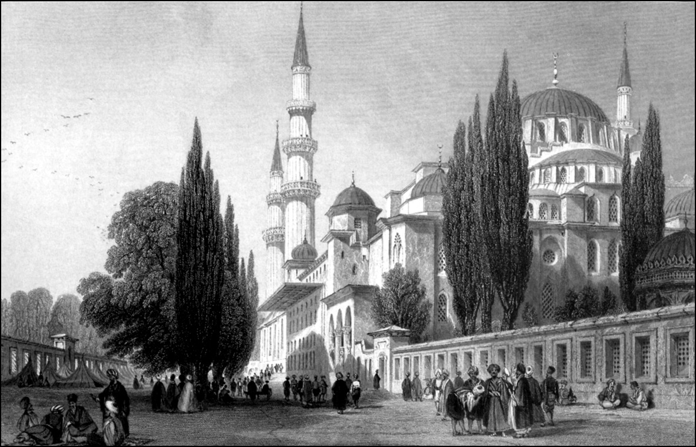

EĞİTİMDE OSMANLI TARİHİ
Bizim yaşadığımız coğrafyada, yani ön planda Balkanlar’da, Karadeniz civarı ülkelerde, Kafkaslar’da ve şimdi Ortadoğu’da çok büyük bir sorun vardır; tarih biliminin ve tarih bilgisinin kitlelere ulaşması, sözün kısası okul kitaplarında anlatılan tarih… Çünkü şurası bir gerçektir ki, hem Türkiye’de hem de bizim çevremizde toplumların, fertlerin çoğunluğu okuldan sonra bir daha tarih kitabı okumazlar.
Bu gerçekten hareketle tarih biliminin, bilgisinin ve yorumunun kitlelere ulaşacağı tek araç okuldaki eğitimdir. Bu nedenle de okul kitapları çok önemlidir. Son yıllarda, özellikle 1960’lardan sonra birtakım uluslararası teşekküllerde aydınlar okul kitaplarının karşılıklı olarak düşmanca ifadelerden arındırılmasıyla bir dostluk havasının, bir barışın geleceğini ümit etmektedirler. Her umut ve temenni gibi bunu da saygıyla karşılamak zorundayız. İhmal edemeyiz, iltifat etmek zorundayız, ancak realiteyi de bilmemiz gerekiyor.
Tarih, bizim içinde bulunduğumuz Balkan ülkeleri ve Karadeniz coğrafyasında, başından beri teleolojik (amaçlı) bir yorumla ele alınır. Buradaki yorum çok açıktır: Bu devletler mazide çok parlak milletlerin kuruluşlarıdır, şanlı bir tarihleri vardır. Bu böyle olmasa da böyle anlatılır… Arada bir kesinti yaşanmıştır ve şimdi parlak mazinin yeniden inşası söz konusudur.
Bu inşa, bütün 19. yüzyıl boyunca Osmanlı İmparatorluğu’nun hükümranlığından kurtulan ve bu hükümranlıktan kurtulduktan sonra müstakil devletçikler kuran Balkan devletleri için onulmaz ve vazgeçilmez bir amaçtır… Şüphesiz ki, bu yorum maziyi kendine göre biçimlendirir ve hedefinden hiçbir taviz vermediği için okul kitapları; Balkan tipi tahripkâr, saldırgan milliyetçiliğin esas mesnetlerinden, dayanak noktalarından biri olarak ortaya çıkar.
Bu sırada saptamalar ve saptırmalar ortaya çıkar. Bu devletler tarihi ve coğrafyayı belirli bir şekilde değiştirirler. Makedonya dediğimiz bugünkü Makedonya Cumhuriyeti’nin toprakları Balkan milletleri arasında çok münakaşalı ve saptırmalıdır. Bir ilmi kongrede hatırlıyorum, orta zamanlar haritasını getirip orada Makedonya’nın Bulgaristan’a ait olduğunu öne süren bir Amerikalı tarihçinin tezi bir saat tartışılmıştı… Gerçekten de ‘Makedonya bizimdir, bu harita da bunu gösteriyor’ diyorlardı… Oysa haritada bütün orta zamanlar haritalarına has teknik noksanlar bulunduğu gibi orta zamanlardaki etnik isimlendirme bugünküne benzemiyordu.
Nitekim orta zaman seyyahlarının çoğunun kaleminde Ukraynalıları ve Rusları ayırt etmek pek mümkün değildir. Yani o zamanlar Ukraynalılara “küçük Rus”, bildiğimiz Ruslara “büyük Rus” demek alışkanlığı sanıldığının aksine herkesi kapsamıyordu. Gene bırakınız ortaçağı, yeniçağların, 18. asrın birtakım halk tipi sınıflamalarında dahi bir Bulgar’la bir Hellen’in ayrımı çok iyi yapılamaz.
Mesnetsiz iddialara ve mesnedin iddia vasıtasının, ispat aletinin de ne derece geçerli olduğuna bakmak gerekir. Bile bile bazı tarihi olayları yeni yorumlarla vermek de bu işin içindedir. Mesela, yakın tarihte Yunanca ders kitapları 1,5 milyon Hellen’in Küçük Asya’dan sürüldüğünü söylerler. Sürülme sanki 26 Ağustos 1922 (Büyük Taaruz) zaferinin hemen akabindeki on-on beş gün içinde olmuştur. Oysa vakıa öyle değildir. Cumhuriyetimizle Venizelos’un arasında yapılan bir anlaşma sonucunda bu vuku bulmuştur. Mübadele hiç şüphesiz ki hoş sonuçlar getiren bir olay değildir. Ama buradan giden bir milyonu aşkın Rum’un mübadele gibi bir antlaşmayla gittiği bir gerçektir. Yani on beş günde sürülmüş değillerdir.
Milliyetçiler tarafından beş hatta beş buçuk asrı kapsayan Osmanlı egemenliği istenmeyen, sevilmeyen bir dönem olduğu için, Balkan milletlerinin tarihi geçiştirilip gitmektedir. Bu dönem üzerindeki bilgisizce tasnifler ve tasvirler yanında arazi rejiminin anlatılışı, mesela devşirmeler, İslamlaştırma politikası gibi konular tamamen gerçeklerden uzak sanılarla, varsayımlarla ve saptırmalarla ele alınır. Burada en sık kullanılan da boyunduruk kelimesidir. Sırbistan’ın genç tarihçilerinden biri olan Olga Ziroyevic hanım bu kelimeye çok sinirlendiği için; “Biz öküz müyüz ki kendi tarihimizin önemli bir dönemi için bu kavramı kullanıyoruz” diye haklı olarak sormuştu. Boyunduruk kelimesiyle ifade edilen hiçbir şey insanlara sempatik görünmemektedir ve bugünkü Balkanlar dünyası Osmanlı eserlerinin son hadde varıncaya kadar tahrip edildiği bir yerdir. Bu tahripten ben söz etmiyorum, sanat ve mimarlık tarihçisi, Türkolog Machiel Kiel’in Balkanlar ve Rumeli’deki Osmanlı envanterleri ve araştırmaları herkesin malumudur.
* * *
Balkan ülkelerinin bazılarında branş olarak bulunmasına rağmen hiçbirinde Türk filolojisi ve tarihi Batı Avrupa ülkelerinde olduğu kadar ehliyetli bir şekilde yapılamaz. Hep başkalarını tenkit etmeyelim, bizde Bizantinist ve Slavistik gibi branşlardan söz edilebilir mi? Hayır. Bunlar olmadığı takdirde biz Osmanlı İmparatorluğu’nun nasıl geniş bir vadide kurulduğunu, bizim sandığımızdan da muhteşem ve karmaşık tarih olduğunu nereden anlayabiliriz? Bilimin yöntemleriyle incelenmeyen bir tarihin getireceği yorum her zaman çocukçadır.
Şüphesiz ki Osmanlı tarihi üzerindeki yazılarda Batı Avrupa’nın olumsuz etkileri de göze çarpar. Mesela Avrupa Konseyi okul kitaplarını önyargı ve yanlış bilgilerden temizlemekten söz ediyor… Bu işi yürüten kimselerin örnek diye gösterdiği “Batı Avrupa” ders kitaplarının kendileri ideolojik ve hatta yer yer ifade bakımından tashihe muhtaçtır. Gösterilen modelin, Balkanlar için gerçekten iyi niyetle yaklaşsak da bir model olamayacağı açıktır.
Bundan başka bu kuruluşlardaki amatör memurların Kafkaslar ve Balkanlar bölgesindeki problemleri anlayamadıkları çok açıktır. Çoğu zaman tarafsız görünen bazı Alman vakıflarının bu işe müdahalesi ortaçağ Cizvitlerininkinden daha farklı değildir. Mesele nasıl çözülecek? Beşeriyet tarihine aktif olarak katılmaları altı yedi asrı geçmeyen Batı ve Kuzeybatı Avrupa’nın okumuşları ve aydınlarının, Ortadoğu ve Akdeniz bölgesinin tarihçilerine direktif veremeyecekleri açıktır. Bu ülkelerde tarihin bizatihi malzemesini, dilinin yoğunluğunu meydana getiren şehirleşme olayı çok eskidir, binlerce yıla varır. Yazılı kayıtları çok eskidir… O takdirde bu iklimi anlayabilmek için bu ülkelerdeki tarihçilerin karşılıklı çalışmalarını birbirlerine öğretmeleri ve vaziyeti kavrayarak birlikte bir tarih yazmaları mümkündür. Maalesef gelişmeler böyle olmamaktadır.
Yakın zamanlara kadar bu gibi etkilerden uzak kalan Arap Ortadoğusu’nun tarihçileri bile Batı Avrupa’daki rüzgârların etkisinde kalmışlardır. Bundan dolayı bazı kavramları değiştirmemiz gerekiyor. Osmanlı tarihinin ilk derli toplu sentezini 18. yüzyıl başlarında Boğdan Prensi olan ve o tarihlerde bildiği bir düzine dil ve Osmanlı musikisi üzerine derin bilgisiyle dikkat çeken Dimitri Kantimir’in kaleme aldığı biliniyor. İstanbul’da Türk ve Hellen karmaşık bir muhitin başındaydı. Yani Mavrokordato Kardeşler, Yanyalı Mehmet Esad Efendi yani Galata Kadısı Esad Efendi, Hezarfen ve hatta Nefiyoğlu gibi bir Türk aydını ki Latince, Rumca, Yunanca çok iyi biliyordu; bu karmaşık grubun birlikte çok iyi bir çalışması vardı.
Ne yazık ki Kantimir Osmanlı tarihini burada topladığı bilgiyle, fakat 1711 Prut Savaşı’ndan sonra kendi menfaatine göre yazmıştı (Incrementa atque decrementa Aulae Othomanicae-Osmanlı İmparatorluğu’nun Yükseliş ve Çöküş Tarihi), çünkü Osmanlı’ya karşı Ruslarla işbirliği yapmıştı.
Yine, 19. yüzyılda kaleme aldığı eseriyle 1774’e kadar Osmanlı müesseselerini tahlil eden ve siyasi tarihi vekayinamelere dayanarak kaleme alan ünlü tarih yazarı Avusturyalı Joseph Hammer von Purgstall hiç şüphesiz ki eskimiş olmakla birlikte geçilemeyen bir sentezin sahibi olmuştur. Bu eser çok sık tenkit edilmesine rağmen daha iyisini yapmış değiliz… Böyle bir sentez henüz ortada yoktur. Hiç şüphesiz ki neredeyse iki asır evvel kaleme alınan bu eserin birtakım şeyleri cevaplayamayacağı, yöntem bakımından sakatlıkları olacağı da açıktır. Ama ne yazık ki daha iyi bir yöntemle daha genişini kaleme alamadık.
Bizim okul kitapları konusunda yapmamız gerekenler şunlardır: Coğrafyayı iyi tanıtmak… Balkanlar ve Akdeniz’in bir kültürel entite, bir kimlik olduğunu gençlerimize anlatmak… Bu coğrafyadaki devletleri ve medeniyetleri sevmek, sevdirmek ve ancak ondan sonra Osmanlı İmparatorluğu’nun tarihte ne kadar önemli bir rol oynayabildiğini anlatabilir ve gelecek kuşaklara nakledebiliriz.
Osmanlı İmparatorluğu tarihi, bir Akdeniz imparatorluğunun tarihidir. Ve bu imparatorluk büyük Akdeniz imparatorluklarının sonuncusudur… Demek ki bu imparatorluğu meydana getiren ulusu onunla birlikte ele alırken kesinlikle Avrupa historiyografisinin üçüncü dünya ülkelerine, Asya’ya, Afrika’ya baktığı gibi bakamayız.
Evvela buradaki ulusların, etnik grupların çoğu tarihte devletleri olan, hatta müstakil kiliseleri, dini kurumları olan topluluklardır. Mesela, Bulgaristan’da Ortaçağ’da iki çarlık vardır. Yunanistan pekâlâ Bizans ve halefi olduğunu, onun kalıntısı olduğunu iddia edebilir. Sırplar için de bu söylenebilir. Macaristan bir imparatorluktur. Arnavutların yazılı bir tarihi vardır ve bu imparatorluklarda daima aktif idareci ve askerler yetiştirmişlerdir… Ortadoğu’nun tarihi bellidir. Bu bölgedeki halkların dilleri çok eskiden beri kayda geçmiştir… Edebiyatları vardır…
Dolayısıyla yabancıların getireceği bir dilin burada yaşaması söz konusu değildir. Hiçbir imparatorluk hele Türklük buralarda başka dilleri silmiş değildir. Yani Hindistan alt-kıtasında olduğu gibi, birtakım yazılı dillerin, hem devlette hem de felsefe ve dinde kullanılan dillerin silinip İngilizce’nin onların yerini alması gibi bir olay söz konusu değildir. Fransız koloniyalizmi Cezayir’de Arapça gibi aslında yer yer Fransızca’dan daha üstün yapısal özellikleri olan ve klâsik dönemi çok daha eskiye giden bir dili maalesef çok kısa bir sürede ortadan kaldırmıştır. Cezayir’in entelektüellerinin içinde bugün bile Arapça’yı doğru konuşmayan, hele hele yazamayanların sayısı hayli kalabalıktır. Böyle bir vakıa Osmanlı hâkimiyeti için söz konusu değildir. Bundan dolayı Osmanlı hâkimiyeti Balkan ve Ortadoğu halklarının tarihlerinde bir kesintiye yol açmamıştır. Kültürel hâkimiyet kaybedilmezse, belli kurucu unsurlar yaşarsa, hele dil kurumlaşmaya muvaffak olursa, o zaman tarihte bir kesiklikten, bir kesintiden, bir kopuştan, bir hafıza kaybından söz etmemiz mümkün değildir. Burada devletlerin ve milletlerin tarihi gelişiminde bu olguyu görmemiz gerekir.
19. yüzyılda doğan ve maalesef İkinci Cihan Harbi’nden biraz evvel “Demir Lejyonerler” denen faşist Antonescu taraftarlarınca başbakan olduğu için katledilen Romanya’nın büyük tarihçisi Nicolae Jorga çok sayıda eser vermiştir. Makale ve kitaplarının sayısı 12 bini bulur. Yazdığı 5 ciltlik Osmanlı Tarihi’nde Türkçe bilmese bile birçok yazılı kaynakların, bu arada da Türkçenin de tercümeyazımlarını çok iyi kullanılmaktadır. Söylediği şudur; “Eğer Osmanlı hâkimiyeti olmasaydı Romenlik varolamazdı, Slav denizi ortasında kaybolup giderdi. Eğer Osmanlı hâkimiyeti olmasaydı hiç şüphesiz Kosova Sırplaşmış olacaktı… Eğer Osmanlı hâkimiyeti olmasaydı Balkanlar’da çok daha başka bir coğrafya meydana gelecekti…”
Muhtemelen bu koruma dolayısıyla da Balkanlar’ın etnik çeşitliliği ve gerilimi devam etmektedir. İkinci Cihan Harbi’nden sonraki sosyalist blok döneminde bu kriz bir ara tehir edilmiştir. Ama Tito Yugoslavyası’nda bile var olduğu sanılan armoninin bulunmadığı, ani patlama ve parçalanma ile ortaya çıkmıştır. Dolayısıyla burada krizin geciktirilmesi söz konusudur. Bu geciktirilme beş asır civarında ifade edilen Osmanlı Balkan hâkimiyetinin bir ürünüdür. Dolayısıyla tutarlı bir Osmanlı tarihi yazabilmemiz için bu vakayı görmemiz ve tetkik etmemiz gerekmektedir.
Balkan incelemelerini üniversitelerde akademik düzeyde yerleştiremezsek okullarımızda yazdığımız tarihlerin verdiği bilgiyle; Balkanlar’dan gelen reaksiyonu veya protestoyu bilimsel olarak karşılayabilmemiz mümkün değildir.
FATİH SULTAN MEHMED VE OTRANTO SEFERİ
Fatih Sultan Mehmed devrindeki fetihler içinde Osmanlı’nın elinde en kısa süreli kalan yer Otranto’dur. Fethedilen diğer ülkelerin hepsi 19. asra kadar İmparatorluk’ta kalmış, hatta bugünkü yurdumuzun bir bölümü de bu devirde fethedilmiştir.
Kırım Hanlığı ve Bosna gibi Osmanlı kültürel çevresinin (Kulturkreis) önemli iki bölümü bu devirden beri Türkiye politikasının vazgeçilmez iki coğrafi ve kültürel unsuru olarak var olmaktadır. Otranto’nun fethi meselesi, Türk siyasi söyleminde çok yer almaz. Maalesef tarihçilik içinde aynı durum söz konusudur.
15. asırda fethedilen Arnavutluk gibi ülkelerin arazi tahrir defterleri veya bazı vakıf kayıtları mevcut olduğu hâlde, mesela Divan-ı Humayun, muhimme defteri gibi kayıtlar yoktur. Garip bir biçimde Osmanlı kronikleri 15. asrın ortalarından evvelki yüz kırk sene için söz konusu değildir. İmparatorluğun kuruluşunu ve büyümesini takip edeceğimiz kroniklerin hemen hepsi 15. asra aittir. Aynı emperyal bir ideoloji ile âdeta tarihin yeniden yazılması söz konusu olabilir. Daha da garip nokta; 1480’deki Otranto cengi ancak 16. asrın tarihçileri Kemalpaşazade ve diğerleri tarafından kaleme alınmaktadır. Demek ki Otranto fethi için bu post bellum Osmanlı kronikleri ve 15. asrın çağdaş İtalyan kaynaklarına başvurmak kaçınılmazdır. Franz Babinger gibi üniversal bir tarihçi bile kaynakların müşterek kullanımındaki tezatları halledebilmiş görünmüyor. O hâlde bu konuda Osmanistler ve İtalya tarihçileri zor bir görevle karşı karşıyadır.
II. Mehmed saltanatı, merkeziyetçi bir imparatorluğun kurulduğu, çağdaş vatan ve millî kimliğimizin inşa edildiği bir devirdir. Saray teşkilatı bu devirde tamamlanmıştır. 22 yaşındaki padişah İstanbul fethinin hemen ertesinde sadrazamını idam ettirdi. Çandarlı Halil Paşa’nın idamı ilk sadrazam idamıdır. Birçok zaviye artan askerî masraflar ve tımar dağıtımı nedeniyle devletleştirildi. Sürgün ile Anadolu halkının bir kısmı Balkanlar’a sürüldü. Bu olaylar nedeniyle hiç şüphesiz Fatih Sultan Mehmed’i bugünün tarihçileri çağdaşlarından daha çok seviyorlar. İstanbul’un fethi ile gayrimüslimlerin ruhani reisleri tayin edildi. İmparatorluk’ta bir Ermeni Patrikhanesi yaratıldı. Bir Roma politikası güdülüyordu. Bu eski Türk ve İslam İmparatorluk ananesi ile de uyum halindedir. Vakı’a 11. asırdan beri Türkler yeni ülkelerine Roma (Rum), kendilerine de Romalı (Rumî) derler; Fatih Sultan Mehmed Kayzer-i Rum unvanını aldı. Taşra iradesi merkezîleştirildi ve padişaha bağlıydı. Saraylıların müdahalesi önlendi. Bu durumun 17. yüzyılda Koçu Bey lâyîhasında özlenen bir sistem olarak zikredildiğini görürüz. Padişahın iktidarı mutlaktı. Kardeşlerin katledilmesi bu dönemde meşru hale geldi. Mamafih iktidarın yapısı bunu gerekli kılıyordu. 100 sene sonra Osmanlı ülkelerini gezen Alman seyyah diyor ki; “Gökte nasıl bir güneş varsa Osmanlı ülkesinde de bir hükümdar olur.”

Batılı ressamların gözüyle bir Türk hücumu.
Fatih Sultan Mehmed’in fetihlerinin yönü Avrupa idi ve şüphesiz İtalya’da ki ilk hedef Roma idi. Bu tartışılmayacak kadar açıktır. II. Mehmed, kendi zamanında eşi az görülen Rönesans tipi bir entelektüeldi. Hünkârın dünya tarihlerini, Büyük İskender’i okuttuğu biliniyor. Yunanca’sını Kritovulos ve Languschi gibi yazarlar methediyor. Farsça şiir yazıyor, Arapça biliyor.
Türk tarihî ve siyasî polemiğinde Avrupa içlerine ilerlemenin doruk noktası I. ve II. Viyana muhasaralarıdır. Siyasî polemikte insanlar Basra’ya ve Mısır’a ilerleyen ecdattan veya Otranto’dan pek söz etmezler. Oysa Otranto’nun Avrupa’nın tarihî hafızasında önemli yer ettiği açıktır. Birçok önemli anlaşma gibi birçok önemli harp de Türk tarihçiliğinde müstakil monografi konusu olmadı. Otranto da böyledir. 13 aylık Otranto hâkimiyeti sadece genel tarihlerimizin konusu olmuştur. Bu genel tarihlerin içinde tarihçinin yaklaşımına göre farklar vardır. İsmail Hakkı Uzunçarşılı, Fatih Sultan Mehmed’in büyük amirali yani Kaptan-ı Derya Gedik Ahmet Paşa’yı Otranto’nun fethine tayinini anlatıyor. Bunun için önce Otranto valisi tayin edilmiştir. Daha evvel Arnavutluk seferine karşı çıkan Gedik Ahmet Paşa, bu sefer âdeta cezalı olarak bu göreve zorlandı. Uzunçarşılı, Paşa’nın çıktığı eyaletin adını veriyor; “Polyo…”
Anlaşıldığı üzere Osmanlı tarihçilerinin belgelerle çalışan bu titiz duayeni İtalya haritalarını bile doğru dürüst tetkik etmedi ve mukayese yapacağı kaynakları okumadı. Buna karşılık popüler tarihçi Yılmaz Öztuna, Otranto Seferi’ni ilginç bir yorumla ele alır. Fatih Sultan Mehmed’in büyük amiralinin Roma’ya, Puglia’ya ayak basması, ona göre Roma imparatorluk idealinin bir tezahürüdür. Zira İtalya yarımadasının ve bu dünyanın en kuvvetli devleti Venedik Cumhuriyeti ile bir mütareke yapılmıştı ve Venedik’in kuzeyde Adriatik kıyısındaki kolonileri de Dalmaçya’da bırakılıyor. Doğrudan Puglia’ya, Napoli ve Roma’ya yürünmek istendiği açıktır. Nea Roma’dan sonra Roma da hüküm altına alınacaktır.
16. yüzyıl tarihçisi İdris-i Bitlisî’ye göre 1479 yılında İyonya Denizi’ndeki Aya Mavri (Santa Maura), Kefalonya ve Zanta adalarının işgalini Gedik Ahmet Paşa teşvik etmiştir. Nitekim o yıl Tocco hanedanından Prens Leonardo hem Osmanlı hükümetine ödemek zorunda olduğu haracı düzgün ödemedi, hem de Osmanlı sarayına sormadan Napoli Kralı Ferdinand’ın kızıyla evlendi. Bu sayede Macar kralı Matyos ile de akraba olmasından dolayı işgale legal sebep bulundu. Bu üç adanın alınışıyla Puglia eyaletinin geçişi sağlanmış oldu.
Bu noktada bir gerçek dikkati çekiyor; İtalya hakimiyetinde bir acelecilik söz konusudur. Akdeniz adalarının en stratejik ve Rodos şövalyelerinin üssü olan Rodos’un kuşatılması Mesih Paşa’ya verilmiş ve buna paralel olarak Gedik Ahmet Paşa İtalya fethine yollanmıştır. Rodos’un alınamadığını; ancak Kanuni devrinde fethedildiğini biliyoruz. Anadolu yakınında Malta şövalyeleri otururken onların merkezi olan Malta adası hiçbir zaman İmparatorluğa katılmamışken ve Sicilya gene Türk hakimiyetine girmemişken İtalya’nın fethi çok erken olmalıdır. Nitekim Venedik’in üsleri olan Kıbrıs 16. asırda, Girit ise 17. asırda fethedilmiştir. Dalmaçya kıyılarında Hırvat korsan Uskoklar ve bütün kıyılarda Venedik etkisi vardı. Bu tarihlerde Belgrad, Macaristan’ın elindeydi ve İtalya’nın kuzeyi henüz pek emin sayılmazdı. Fatih Sultan Mehmed’in alelacele Gedik Ahmet Paşa’yı güney İtalya’ya yollaması, büyük İtalya fethi için bir uvertürdür ve siyasi bakımdan Roma imparatorluk idealinin bir deklarasyonudur.
Gedik Ahmet Paşa’nın ne kadarlık bir kuvvetle Otranto’ya çıktığı kaynaklarda münakaşalıdır. 100 bin asker gibi rakamlar mübalağalıdır. Yeni Çağ’ın lojistik imkanları ve bizatihi Puglia eyaletinin imkanları böyle kalabalık fetih birliklerini beslemeye müsait değildir. Her halükârda Temmuz sonunda Paşa’nın fazla direnme görmeden İtalya’ya ayak bastığı ve 11 Ağustos 1480’da Otranto kalesinin alınmasıyla İtalya’nın güneyinde Osmanlı hakimiyetinin başladığı görülmektedir.

1500’lü yıllardaki İtalya’yı gösteren bir harita ve Fatih Sultan Mehmed.
Popüler tarihçilerden Mustafa Cezar, Fatih Sultan Mehmed’in ölümünden önce Evranosoğlu Ahmet’e Mora’daki Venedik kalelerinin üzerine akın emrettiği biliniyor. Muhtemelen Otranto uvertüründen sonra İtalya’nın fetih opus magnumu başlayacak ve Venedik’e sefer açılacaktı. Aslında padişah niçin Anadolu’ya geçmişti? Gebze çayırındaki zehirlenme ve ölüm birçok soruyu cevapsız bırakıyor. Bu sefer, Memluklular’a mı yoksa İtalya’ya mı yönelikti? Her halükârda İtalya’ya giriş natamam bir fetih teşebbüsü olarak kaldı. II. Beyazid ve Cem Sultan vakasıyla İtalya hakimiyetinin sona ereceği anlaşıldı.
Nitekim 10 Eylül 1481’de İtalya’ya veda edildi. 13 aylık hakimiyetin sonu çok kanlı bitti. Fatih’in fetihleri, hatta bütün Osmanlı fetihleri içinde en kısa süreni bu oldu. İkinci kısa süreli fetih 17. asırda Ukrayna’da fethedilip bırakılan Çihrin Sahrası olmuştur. Genellikle Fatih’in fethettiği ülkeler 19. yüzyıla kadar elde kalmışken Otranto bir istisnadır.
Otranto, Türk tarihyazıcılığında nasıl ele alındı ve yorum itibariyle nedir? İtalya’nın fethini Roma İmparatorluğu’nun yeniden kurulması ve Fatih’in bu misyonu etrafında ele almak gerekir. Genelde halefi II. Beyazid böyle bir misyon yüklenmediğinden Otranto’dan çabuk vazgeçildi.
Tarih yazınımızda (historiography) kimse bu uzun savaşın lojistik ve teknik yönleri üzerinde durmuyor. Fatih Sultan Mehmed İtalya’yı Justinyanus gibi almak istiyordu. Ama artık İtalya ve Avrupa, Justinyanus devrindeki gibi değildi. En azından İtalya fethi için gerekli ön hazırlıklar tamamlanmış değildi. O da Mora Yarımadası, Dalmaçya kıyıları, Sırbistan ve Venedik sürecini kapsar.
Padişahın erken ölümü, onun politikasını tayin etmemizi güçleştiriyor. Fatih Sultan Mehmed gibi bir dahiyi anlamaktaki güçlük kadar, kaynakları da yeterince incelemeyişimiz yorum imkansızlığının nedenidir.
Otranto, Kilisenin ve Hıristiyan dünyasının ilerleyen Türklere karşı bir propaganda edebiyatı yaratmasına vesile oldu. Ne gariptir ki bu edebiyatın, ilmi tarihçiliği etkilediği görülüyor. Henüz İtalya tarihi bu konuda metodik bir ayıklamaya girişmiştir. Soğukkanlı tarih için lâzım olan tek şey; arşiv malzemesi ve dil donanımı... Altın kural olan “audi alteram partem-diğer tarafı dinle” usulünü izlemek gerekiyor.
ÜÇ KITADA OSMANLILAR
Kanunî Sultan Süleyman Devri
Hepimiz 16. asrı, Osmanlı İmparatorluğu’nun doruk noktası olarak bilir ve kabul ederiz. Bu da Kanunî Sultan Süleyman asrıyla aynileştirilir. Daha Kanunî Sultan Süleyman hayattayken böyle bir hava vardı ve ondan sonra da bütün 16. asır boyunca, yani oğlu II. Selim, torunu III. Murad, torununun oğlu III. Mehmed devirlerinde de Gelibolulu Mustafa Âli gibi vakanüvisler, Kanunî Sultan Süleyman devrinden “Asr-ı Süleyman Han” diye bahsederler.
Burada neredeyse “Asr-ı Saadet” demelerine ramak kalır. Gerçekten de Osmanlı İmparatorluğu ulaşabileceği sınırlara ulaşmıştır demeyelim, ama artık bir dünya gücü olduğunu kanıtlamıştır. Aslında Osmanlı İmparatorluğu’nun gerçek kurucusu ve Avrupa coğrafyası karşısında imparatorluğun mevcudiyetini, ağırlığını hissettiren hükümdar hiç şüphesiz ki II. Mehmed, yani Fatih Sultan Mehmed Han’dır.
Belki bir şehir devleti derekesine inmiş olsa bile, yine de Roma İmparatorluğu’nu sona erdiren, ama her halükârda İstanbul gibi çok zor bir şehri çağın askerî tekniklerini kullanarak ele geçiren bu 21 yaşındaki genç mareşal, ardından bugünkü Romanya’ya ve Moldova’ya tekabül eden Eflak-Boğdan topraklarını, Yunanistan’ın hemen hemen tamamını, zaptı çok zor olan Ege adalarından Eğriboz’u, Limni’yi (Rodos’u kuşatmışsa da alamamıştır), Arnavutluk’u, Sırbistan’ın çok önemli bir kesimini (Belgrad ve etrafı hariç olmak üzere), Bosna Hersek’i ele geçirmiş; Anadolu topraklarından Karaman’ı eyaletleri arasına katmış, Otlukbeli Savaşı’nda Doğu Anadolu’da Uzun Hasan’ın, yani Akkoyunlular Devleti’nin hâkimiyetini sona erdirmiş, nihayet Trabzon’da Pontus Rum İmparatorluğu’nun kalelerini ele geçirmiş, bir ahitname ile dahilî anarşi içindeki Kırım Hanlığı’nı Osmanlı Devleti’ne tâbi hale getirmiş ve bu hanlığın en önemli parçasını, yani Sudak ve Kefe’yi ihtiva eden kesimini de Kefe Sancağı adı altında merkeze bağlamıştır.
Hiç şüphe yok ki Doğu’da ve Batı’da Fatih Sultan Mehmed asrı Osmanlı İmparatorluğu’nun artık bir cihan devleti haline dönüşmesidir. Büyük güçler içindedir ve dünyadaki devletler, bütün büyük güçler politikalarını birbirlerine karşı ve birbirlerini kollayarak, birbirlerini izleyerek oluştururlar.
Kanunî Sultan Süleyman devrinde bu manzumeye Bağdat’ın, yani bugünkü Irak’ın fethi –ki daha evvel babası Yavuz Sultan Selim Han bütün Güneydoğu Anadolu’yu, Suriye, Filistin, Lübnan ve Mısır’ı topraklara katmıştı– eklenmiştir. Bu bölgede Roma İmparatorluğu vasfına sahip, üniversal imparatorluk vasfına sahip bir imparatorluk Mezopotamya’ya hâkim olmak durumundadır. Bunun üzerinde önemle duruyoruz, çünkü tarihte Osmanlı’dan evvelki iki Roma İmparatorluğu Mezopotamya’ya hâkim olamamışlardır. Birinci Roma Partlarla, Bizans denilen ikinci Roma ise Sasanilerle savaşmak zorunda kalmıştır ve Fırat havzasının üst kısmını elinde tutsa da güney kısmını, yani bugünkü Irak’ı (bugünkü Irak son asırda ortaya konmuş suni bir coğrafyadır), Mezopotamya’yı ele geçirememiştir. Burası hepimizin bildiği gibi İran İmparatorluğu’nun, yani Ahemenişlerden beri devam eden ama Romalıların çağdaşı olan Part Hanedanı’nın ve ardından da Sasanilerin elinde kalmıştır.
İki Roma’nın ardından, üçüncü Roma diyebileceğimiz Osmanlı, Irakeyn Seferiyle ilk defa Mezopotamya’ya hâkim olmakta ve Basra Körfezi’ne kadar uzanmaktadır. Bu Kanunî Sultan Süleyman’ın doğudaki büyük seferidir ve iyi bir mareşal olduğunu göstermektedir. İkincisi bu sefer sayesinde, İran’la olan sorun çözülmese bile, İran sınırlarımız teminat altına alınmıştır, fakat asıl önemlisi Macaristan’ın fethidir.
Macaristan neresidir? Orta Avrupa’da bugünkü Macaristan’a ilave olarak Slovakya, Romanya’nın Transilvanya denen kısmı –Macarca’da Erdel denir, biz de aynı tabiri kullanırız– bugünkü Sırbistan (çünkü Belgrad onların elindeydi) ve bugünkü Avusturya’nın da Burgenland diye bilinen kısmından müteşekkil bir alandır. Ukrayna’dan bir küçük bölümü de buna ilave ediniz ve bir ara, 15. asrın sonunda, Kral Matyas “Corvinus” zamanında Macaristan’ın Venedik’e kadar yayıldığını, bir ara Viyana’yı bile ele geçirdiğini de hesaba katınız.
Dahası var: Kral Sigismund zamanında Alman imparatorluk tacı da Macaristan’a verilmişti. Macaristan bu nedenle, Polonya ve Litvanya tacını, Macaristan tacını ve Alman imparatorluk tacını elinde tutan kuvvetli bir devlettir. Bütün Orta Avrupa’nın ahvali Macaristan’dan sorulur. Bu hâkimiyet Balkanlar’a kadar uzanır. Ta 15. asırdan beri Osmanlı İmparatorluğu, Balkanlar’da Macarlarla savaşmak durumunda kalmıştır. Daha Hacı İlbeyi zamanında Sırpsındığı dediğimiz savaştan sonra, Macarlar en önemli tarihî mareşallerinden Hunyadi Yanoş komutasında diğer Haçlı devletleri birleştirerek, hepimizin bildiği gibi Balkanlar’a sarkmıştır. Eğer II. Murad’ın dâhiyane savunması olmasa ve 1442’de Varna Savaşı’nı kazanmasa, Osmanlıların daha o tarihte Balkanlar’dan sökülüp atılması işten bile değildi. Bazı yayılma ve hâkimiyetler, doğrudan doğruya iktisadî gelişmelerin coğrafî stratejik gereksinimleri sonucu ortaya çıkar. Mesela Almanya’nın Ortaçağ’da Polonya’ya doğru yayılması veya Rusya’nın, yani Moskova Devleti’nin Sibirya’ya doğru genişlemesi buna örnektir. Keşifler sonucunda İspanyolların yerkürenin yarısına hâkim olması da bunun başka bir tezahürüdür. Ama bazı tür hâkimiyet doğrudan doğruya savaşlarla tayin edilir. O savaşlardaki başkomutanın başarısı ve orduların taktiği, uzun hâkimiyet yıllarını ardından getirir.
Osmanlı tarihinde 1444 Varna Savaşı, I. ve II. Kosova savaşları ve 1526 Mohaç Meydan Muharebesi bunlardandır. 1526’da Polonya, Litvanya ve Macar tacını elinde tutan Kral Layoş Mohaç’ta yenilmiştir ve o günün akşamı Avrupa tarihi bir şokla, bir zelzele ile sarsılmıştır. Kuvvetli Macaristan Krallığı birden ortadan kalkmaktadır. Bu imparatorluğun vârisi ise, tacı bekleyen Habsburglar’dır. Birdenbire Tuna mansabına Osmanlı İmparatorluğu, Türklerin imparatorluğu yerleşmektedir. Bu yerleşim, bu hâkimiyet; 5, 10, 15, 50 senelik bir geçici yerleşim değildir. Yaklaşık 180 sene sürecektir. Demek ki Türkler çok önemli bir şekilde Avrupa tarihinin içine girmektedirler. Katolik krallıkların en önemlisi olan, Roma Kilisesi’nin yeryüzündeki yansıması sayılabilecek mukaddes krallık Macaristan bir anda Türklerin eline geçmekte, çok küçük bir kısmı onun kanunî vârisi sayılan Avusturya’nın Habsburglar hanedanı tarafından kontrol edilmektedir. Bu da Pressburg veya Bratislava Macaristanı dediğimiz bugünkü Slovakya topraklarıdır. Ancak orası bile Kanunî’den sonra sık sık birtakım seferlere, birtakım fütuhata uğrayacak, bazı kalelerin elden çıkmasıyla hâkimiyetin zor tutulduğu bir alan olacaktır.
Kimdir bu Habsburglar?
Habsburglar bir Avusturya hanedanıdır. Bugünkü Avusturya’nın küçük bir bölümünde 13. asırda hâkimiyetleri vardır. Tarihin akışı içinde Kral Ottokar Promisil’le Rudolf Habsburg’un savaşı sonunda Bohemya, yani bugünkü Çekya da ellerine geçmiştir.
Zamanla Avusturya Habsburgları, Alman devletlerinin konfederasyonu demek olan Alman imparatorluk tacını almışlardır. Bundan sonra çok ilginç bir gelişme görülmektedir. Avusturya Habsburgları ilk önce çok ilginç bir şekilde, evlilik yoluyla Burgondiya gibi zengin bir devletin vârisi oluyorlar. Burgondiya bugünkü Fransa’nın Dijon bölgesini, fakat asıl önemlisi Belçika ve Flandre’ı kapsayan zengin bir dükalıktır. I. Maximilian’ın, Marie [de Bourgogne] ile yaptığı evlilik bu toprakları Avusturya’ya kazandırıyor. Oğlu Güzel Philippe [Felipe] ise daha iyisini yapıyor, İspanya verasetini alıyor.
O yıllarda İspanya’da Müslümanlar gerilemektedir. Kastilya kraliçesi Isabel ile Aragon kralı Ferdinand evlenmiş, bir birlik kurmuş, İspanya’yı birleştirmektedirler. 1492’de de Granada’dan son Müslümanlar ve ardından Yahudilerin sürülmesiyle Katolik İspanya ortaya çıkmaktadır. Yine aynı yıl Kolomb’un keşifleriyle Amerika kıtaları da İspanya’ya bağlanmaktadır. Şimdi onların kızı, Deli Juana denen prensesle, Habsburg hanedanından Philippe evleniyorlar: Buna İspanyol düğünü denir. Burgondiya düğününden sonra İspanyol düğünü ile Avusturya genişliyor. Ve bu arada tabii Maximilian’ın Alman imparatorluk tacını da giydiğini düşünürseniz, artık bizim kitaplarımızdaki gibi Avusturya İmparatorluğu lafını edemeyiz, o çok yanlıştır, Alman İmparatorluğu’ndan söz etmemiz gerekir. Yani bizim tarih boyunca savaştığımız devlet aslında Avusturya İmparatorluğu değil, Alman İmparatorluğu’dur. Çünkü Avusturya İmparatorluğu, ancak 19. yüzyıl başında, Napolyon’un Alman İmparatorluğu’nu dağıtması ve Avusturya’ya Avusturya İmparatorluğu unvanını kabul ettirmesi ile ortaya çıkmıştır. Biz Avusturya İmparatorluğu ile savaşmadık, bu çok ilginç bir gerçektir. Biz Avusturya İmparatorluğu ile Birinci Dünya Savaşı’nda sadece müttefik olduk. O da pahalı bir ittifaktır. Çünkü askerlik bakımından pek başarılı bir savunma sistemi kuramadıklarından, bir kolordumuz Galiçya’da, Avusturya topraklarını Rusya’ya karşı savunmak zorunda kaldı.

Kanuni Sultan Süleyman ve eşi Hürrem Sultan’ın türbeleri. William Henry Bartlett.
İspanya bir yanda, Almanya-Avusturya toprakları öbür yanda, Habsburglar Avrupa’nın hâkimi olarak görünüyorlar. Tek ciddi rakipleri Osmanlılar. Ve çok ciddi bir rakip. Bir kere sınırları zorluyor, onların kanunî miras hakkı olan Macaristan’ı kendi elinde tutuyor, daha da önemlisi Katolik devlete karşı ayaklanan Protestanları himaye ediyor, yani Alman İmparatorluğu içindeki Protestan Prenslikleri tutuyor. Protestanların hamisi Osmanlı İmparatorluğu oluyor. Tabii bu durumda Osmanlı’nın bir müttefiki vardır. Kim? Fransa. Fransa da Katolik olmasına rağmen, İspanya ve Almanya tarafından Katolik baskısı altına alındığı için ister istemez Türklerle ittifaka gidiyor.
Kanunî asrında ve onun haleflerinden, bilhassa III. Murad zamanında Osmanlı İmparatorluğu’na yanaşmak zorunda olan büyük bir devlet, doğmakta olan büyük bir devlet daha var. Hangi devlettir bu? İngiltere. İngiltere’nin kudretli kraliçesi, gerçekten kurucu kraliçesi I. Elizabeth, İspanya’ya karşı müttefikini bulmuştur. Böylelikle İngiltere ile de diplomatik ilişkiler kuruluyor.
Şimdi ortaya çıkan garipliğe bakın. Müttefiklerimiz veya bize yanaşanlar Fransa ve İngiltere; karşımızda ise Almanya ve İspanya Habsburgları. Ferdinand ve büyük kardeşi Şarlken [V. Karl] bir müddet sonra bu imparatorluğu bölüştüler, Şarlken İspanya kralı olarak Kral Carlos adını alarak İspanya ve sömürgelerinde, Ferdinand ise Avusturya ve civarındaki Alman imparatorluk tacı ülkelerinde kaldı. Bunlara karşılık bizim karşımızda biri daha var: Müslüman İran. Bu hep böyle gidecektir. II. Viyana Kuşatması yıllarında bile Osmanlı’nın müttefiki İsveç, Avrupa’nın müttefiki İran’dır.
Bir ülke daha var: Rusya. Henüz temastayız sadece, diplomatik temastayız, ciddi bir çatışmamız yok. Çatışma işlerine Kırım Hanlığı bakıyor. Moskova Rusyası’nda Korkunç İvan (IV. İvan) Kanunî Sultan Süleyman Han’ın çağdaşı ve Rusya’yı kasıp kavuruyor. Şiddetli bir yönetim tarzı var. Rusya’da gerçek anlamda feodal bir nizamı kuruyor. Angaryaya bağlı toprak serfliğini yerleştiriyor ve parçalanan Altınordu’nun Astrahan ve Kazan gibi parçalarını yutuyor. Sibir Hanlığı zaten Rusya’nın elindeydi, son parça Kırım Hanlığı olacaktı, orada muvaffak olamıyorlar ve Kırım Hanlığı çoktan Osmanlı idaresi altına girmiştir.

Süleymaniye Camii.
Kırım Hanlığı, Macaristan’dan kopan bugünkü Romanya’daki Erdel Beyliği, Eflak, Boğdan beylikleri ve Mısır, Osmanlı’nın vasalları, yani imtiyazlı beylikleridir. Fakat herhangi bir vilayet gibi olmayıp, ayrı yönetim sistemi kullanırlar. Hatta Eflak, Boğdan, Kırım ve Erdel dış ülkelere sefir yollayıp, sefir bile kabul ederler. Biliyorsunuz Macaristan’ın bu kesimi Macar kültürel bağımsızlığını, siyasî bağımsızlığını devam ettirmiştir ve Osmanlı vasalı Erdel Beyliği, eyalet değil imtiyazlı beylik olan Erdel Beyliği 200 sene kadar Macar bağımsızlığını ve kültürünü devam ettirmesiyle göze batacaktır.
Müttefikimiz Fransa Akdeniz’e açılmıştır; Avusturyalıların ve Almanların Akdeniz’e çıkması ise söz konusu değildir. Karşımızda İspanya var ve İspanya’yla çatışmamız bize bağlı olan Cezayir yüzündendir. Cezayir yani Mağrib Arabistanı veya Mağribî Kuzey Afrika dediğimiz bölge, Anadolu’da yetişen denizciler, yeniçeriler ve leventler tarafından idare ediliyor. Bunların başında Barbaros Hayrettin Paşa var ve o sayede Kuzey Afrika elimizde kalmıştır. Bu denizci kuvvet bir beylerbeyiliktir, imtiyazlı bir beylerbeyiliktir, İspanya’ya kafa tutmakta, hatta onu püskürtmektedir. Dolayısıyla Kuzey Afrika İspanya’nın eline düşmekten kurtulmuştur.
Bu denge çok ilginçtir ve Kanunî Sultan Süleyman asrında kurulan bu sınırlar, yani Tuna mansabından Fırat’a, Ukrayna ovalarından Kuzey Afrika’ya ve Habeş Beyliği dediğimiz, bugünkü Habeşistan’dan çok Somali’yi içeren kesimle Osmanlı İmparatorluğu aslında iki asır, yani ta 17. asır sonlarına kadar devam edecek bir Akdeniz, Balkan ve Doğu Avrupa dengesi kurmuş, üç kıtaya hükmetmiştir. Bu hiç şüphesiz ki bugünkü tarihi tayin eden bir dengedir ve günümüzün tarihini oradan başlayarak takip etmek zorundayız.